KANJI
Yukiko's arc shows the first cracks in P4G's narrative, but Yukiko is difficult to discuss without the context of the entire game. Kanji's depiction is troubling from the start.
Kanji is introduced through an unflattering TV report and word of mouth. He is described as a punk and a nuisance. Once you get closer to him, you start to see that he is much less hardened and scary than he and others let on.
You also learn Kanji is is becoming distressed over his attraction to another boy in town. This leads Kanji to overcompensate and assume the people around him are all looking down on him.
Before going into someone's dungeon in P4G, there will be an investigation segment. These are often a bad utilization of time on P4G's part. From previous discussions you know that people throughout the town view Kanji as a punk, through your investigation you learn that Kanji reacts poorly to being called odd or strange.
![An in game screenshot from Persona 4 Golden. Only Kanji and his shadow are on screen. Kanji is closest to the camera, his back is facing the camera. His shadow stands across from him. His shadow is only wearing a fundoshi and has a blueish aura surrounding him. Shadow Kanji's character sprite is to the right of the screen. He is currently blushing. A dialogue box at the bottom of the screen reads 'They'd never say those awful, degrading things. Yes, I vastly prefer men...'. This dialogue is spoken by Shadow Kanji.](../../assets/article-specific/P4G/kanji_quote_1.png)
"They'd never say those awful, degrading things. Yes, I vastly prefer men..."
- Shadow Kanji
Kanji's shadow is a very apparent homophobic stereotype. He is feminine, sexual, and only interested in men. The party views him as a joke. When telling Kanji to accept his shadow as a part of himself Yosuke does not even try to hide his disgust and admits that Kanji's apparent attraction in men is shameful and something that Yosuke would struggle to get over.
![An in game screenshot from Persona 4 Golden. The game is currently on a battle screen. Yukiko, Yosuke, Yu, and Chie are facing against Kanji's shadow. Kanji's shadow consists of two strong men on either side of it. His shadow is in the center, it is a heavily muscled masculine figure carrying two mars' symbols. His shadow's face is visible where the figure's face would be. His face is surrounded by roses. Yosuke's character sprite is to the right of the screen, he is currently speaking and looks worried. The textbox at the bottom of the screen reads: 'This isn't really him! It's just his emotions going haywire!'.](../../assets/article-specific/P4G/yosuke_quote_1.png)
"This isn't really him! It's just his emotions going haywire!"
- Yosuke
Yosuke, Chie, and Yukiko's shadows are framed as exaggerated emotions that exist inside themselves. It is true that Yosuke is bored of his life, that Chie latches onto her friend but also envies her, and that Yukiko wants to run away. Kanji's shadow operates differently: his shadow exists as something he would never want to become.
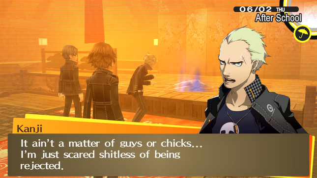
"It ain't a matter of guys or chicks... I'm just scared shitless of being rejected."
- Kanji
After P4G enforces as many harmful ideas as it can, Kanji turns to the camera and states that this is not a matter of his sexuality, he is simply scared of being rejected.
Kanji's shadow does make a comment about how he does not like girls because they make fun of him. Later Kanji will go into more detail about how girls would make fun of him for sewing and knitting.
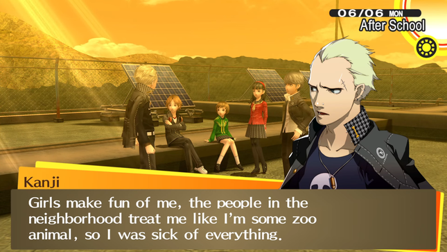
"Girls make fun of me, the people in the neighborhood treat me like I'm some zoo animal, so I was sick of everything."
- Kanji
The sole reason you are given for why people do not like Kanji during the investigation segment is that he causes trouble. As the player, you know he feels shame for his attraction to another boy. The focus on the harassment from faced his female classmates only exists through Kanji's dialogue. After the intense focus on his sexuality it feels like an avoidant turn to focus on something that has never happened on screen at this point.
Even as a narrative about Kanji facing discrimination due to his "girlish" hobbies, P4G still falls flat. Kanji continues to hide his love of sewing and is bullied by the people around him.
It is interesting to say that women specifically target him with homophobia. This was done so they could have an excuse for Kanji not liking women that was not because he was gay, but this is a weighty statement in P4G. For the rest of the game, Kanji will face harassment from his teammates, the brunt of which is done by Yosuke, who is not a girl.
After this moment with Kanji, it became apparent that anytime Persona 4 needed an overly mean minor character to be cruel in a heavy-handed way, on screen or theoretical, it would constantly be a female character, with exceptions for Morooka and the TV producer who harasses Yukiko in her SLINK. This may be a strange point to bring up now, but it is incredibly interesting in the context of P4G as a whole and we can wrap back to it later.
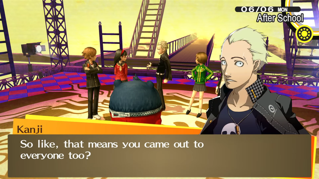
"So like, that means you came out to everyone too?"
- Kanji
P4G crafted a story about Kanji accepting his sexuality, went through with making Kanji's shadow a homophobic stereotype throughout the dungeon for "humor" and shock factor, and at the last moment they backed out and proposed that Kanji is facing bullying, from his female peers specifically, because he has "feminine hobbies".
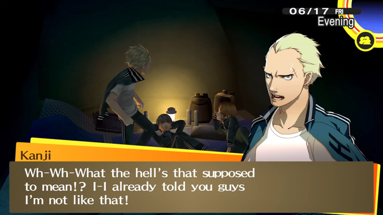
"Wh-wh-What the hell's that supposed to mean!? I-I already told you guys I'm not like that!"
- Kanji
From the way that end of Kanji's arc is framed, it could be argued that P4G never makes any claims about what his sexuality actually is, but later on in the game Kanji will deny being gay when Yosuke bluntly asks him.
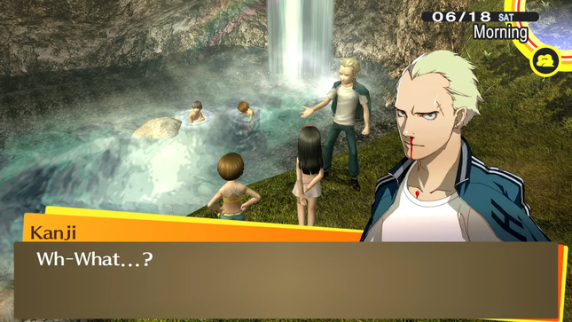
"Wh-What...?"
- Kanji
Kanji is not gay until P4G needs a punching bag, and that is what's upsetting about Kanji's character. He is full of stereotypes about gay men, and the final stereotype of them all is that he is not gay, just insecure.
P4G can be as cruel as it wants, and if you want to complain about the obvious moments of cruel bigotry, you are an idiot who is misunderstanding the words of the characters.
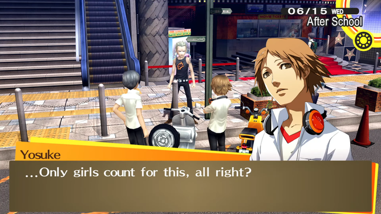
"... Only girls count for this, all right?"
- Yosuke
When Kanji spends the rest of the game as a victim of numerous homophobic abuses, it is apparent that Kanji's words are a vehicle for the writers' homophobia. It does not matter if Kanji states that his insecurities do not come from his sexuality when Kanji is battered with the same targeted jokes repeatedly.
If Kanji is actually gay or not doesn't even matter when discussing P4G's bigotry. Through the actions of the characters and the presentation of Kanji's shadow, we know that Persona 4 despises gay people.
Kanji's treatment throughout P4G casts doubt on the game's messages of truth and companionship. P4G cannot reach the truth on Kanji's character as he needs to fill different roles depending on the situation. In serious moments Kanji is building up courage to be honest about his hobbies, but at any other point he is the victim of harassment from the people around him.
RISE AND YUKIKO
P4G proposes that Rise is different from how she acts on TV; Yosuke even comments on this directly after meeting her. When talking to Rise at the start of her arc she has an moody disposition. The disconnect is apparent as this is not an idol's attitude.
Rise's dungeon is set up as the discrepancy between her idol and real self, but upon entering the game focuses on sexualizing Rise as much as possible. The dungeon is a strip club, but P4G does not have anything to say about the sexualization of idols, they just want to put their fifteen-year-old character in sexual situations for fun.
Her shadow runs around implying that she is going to do a strip show, and the male characters express excitement at the prospect of witnessing it. You could argue this is one of the disconnects between Rise and her idol self. It will be discussed that this is not the case, but P4G's true intentions are quite clear when it introduces Rise through a TV swimsuit ad.
At the end of Rise's dungeon she declares that there is no real version of herself. Her, her shadow, and Risette exist simultaneously.
Rise's shadow and awakening makes little sense in the overall concept of her character. You are told at the start of her arc that there is a disconnect between Rise and Risette, and you see this as her attitude is less cheerful. She never acts this way for the rest of the game. There is no disconnect between Rise and Risette because Rise is P4G's perfect idol.
She talks in a high voice, she cannot fight, she is constantly cheerful, she is obsessed with the nothing player character and wants his attention at all times, and she is extremely forward. Aside from her moody attitude at the start, you are never shown how there is any difference at all between Rise and Risette. Risette is not a part of Rise, she is Rise. There is a true form of Rise, and she acts like it all the time.
The one thing Rise has going for her is her repeated insistence that she would not like to be an idol anymore during her SLINK. This is made null. After being hounded by former managers and teased by the prospect of another idol taking her place, Rise decides to return to her work. This is framed as her deciding Risette will always be a part of her, but it just feels like she is doing what everyone wants her to do, which is especially cruel given how troubling it is to be a young idol in the real world.
Rise deciding to return to her idol work is not an inherently a bad plot beat, but it is a bad turn for her already nothing character, and in the context of P4G it is questionable.
Despite being a game about finding truth and changing, the main cast of P4G never changes, and if they do, it's so they can conform better or to please the people around them.
Yukiko has an arc that is similarly bad within the context of P4G. During her SLINK Yukiko starts studying to get a job outside of Inaba. Her passion for moving out of the city is the most complex Yukiko's character gets, but in the end, she decides to stay in Inaba and continue to run her family's inn.
On a deeper level, P4G frames Yukiko's desire to choose her own life as selfish and immature, which is troubling on its own. Her shadow communicates that moving away is something that Yukiko truly wants, and the inn is a role that has been imposed on Yukiko since birth. It is unfair to frame Yukiko's story as her finding the truth within herself when she is putting herself aside to make others happy.
Yukiko and Rise are both characters that are at their best when they decide to make a change, but these changes are backtracked. These are not inherently bad plotlines, but they are a smoking gun in P4G.
It is serendipitous for multiple party members to decide that any changes they have wanted to make were done with false pretenses and that they are most happy to return to their singular, marketable, defining trait that ATLUS can milk for years.
Dojima's SLINK, which focuses on his tendency to run away from his duties as a father in an attempt to protect Nanako and avenge her mother, ends with him running off from Nanako once again so he can do overtime work; it feels like a joke. Any major character change is reserved for minor SLINK characters. It's nice that Shu finally got to do what makes him happy, it would be nice to see meaningful change take place in the main plot as well.
Rise feels like one of the most nothing characters Persona has put to paper. What hope was there? Rise cannot be different from her idol self since characters in Persona revolve around being as perfect to the player as possible, especially for the young girl characters.
NAOTO
Naoto is one of the few times P4G accurately showcases how people around Inaba feel about a character rather than relying solely on faceless NPC's. Dojima directly informs the party that the police force is getting fed up with Naoto and views him as a problem due to his age.
Moving into his dungeon, the focus is his desire to be older so he can be taken more seriously, but you also learn that he is pretending to be a man and is doing so to fit his perfect image of a detective.
At the end of his dungeon, Naoto accepts that he is a woman, and he will choose to continue his life as a female detective. P4G's message might seem to be "Men and women are equal, Naoto is just as competent as a female detective", but that is an assumption that can only be made when viewing P4G with an unfair amount of goodwill.
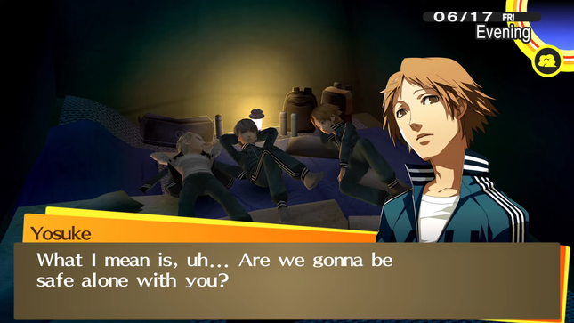
"What I mean is, uh... Are we gonna be safe alone with you?"
- Yosuke
Shortly after Kanji joins the party, their school's first year and second year students go on a camping trip with each other. Famously during this trip Yosuke claims that Kanji only wants to be around him and Yu so Kanji can sexually assault them. Yosuke explicitly states he would be scared to death to share a tent with Kanji.
During this event Kanji ends up in the girl's tent so the girls stay in Yosuke and Yu's tent. The next day Yosuke tells the girls that they owe him and should wear swimsuits as payback so he can be a creep and watch them.
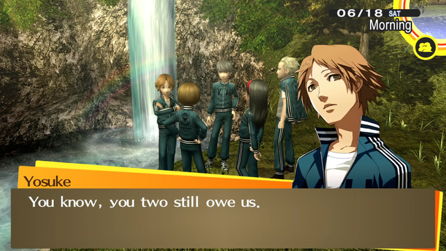
"You know, you two still owe us."
- Yosuke
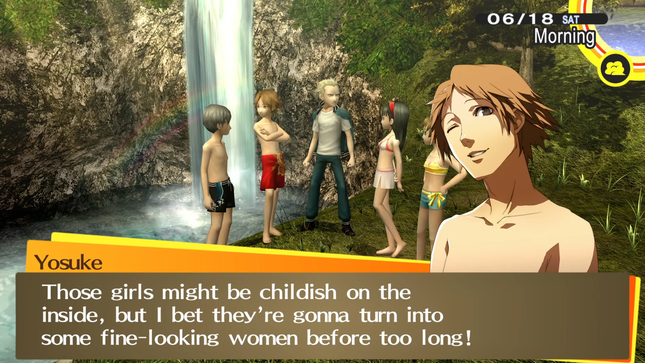
"Those girls might be childish on the inside, but I bet they're gonna turn into some fine-looking women before too long!"
- Yosuke
This moment is where it becomes most obvious where Yosuke and P4G's homophobia comes from. In P4G the female characters are repeatedly put into sexual situations for the male characters. To be a woman in P4G means being sexually harassed. P4G, with Yosuke as their mouthpiece, are extremely uncomfortable with homosexual men because the spotlight is shined back onto them and they are expected to be treated as they treat women. They are put into a woman's position.
P4G loves masculinity. Due to the unnamed and unshown swarms of teen girls making fun of Kanji for feminine hobbies, it is known that P4G wants Kanji's arc to be about how Kanji can like sewing and still be masculine. The message is not that it's okay for Kanji to like "feminine hobbies". It is directly that he can still maintain his manliness while doing so.
Kanji's arc is made moot by P4G dangling masculinity in front of Kanji and asking him to prove himself repeatedly. Even one of Rise's battle quotes pertains to calling Kanji manly, because P4G is obsessed with masculinity.
Shortly after Naoto's arc, after Yosuke forcibly signs the girls up for a beauty pageant, the boys in turn are signed up for a drag competition. There is a unique focus on how unfair and cruel this is for the boys: the girls should be able to put up with the beauty pageant and be sexually harassed, but to turn this back to the boys around them is too far.
![An in game screenshot from Persona 4 Golden. Kanji and Yosuke are currently on a stage with a male NPC on their left. The NPC is holding a microphone and is wearing a bright pink afro. Kanji is currently dressed like Marilyn Monroe, he has a blonde wig and white dress on. Yosuke is wearing small pigtails, a blouse, and a skirt. They are standing in front of an audience that is mostly blocked by a textbox. An offsreen character is currently speaking, they have no character sprite. The textbox at the bottom of the screen reads: 'Dude, it's terrifying... I can just imagine someone like him sitting across from me on a train!'.](../../assets/article-specific/P4G/npc_quote_1.png)
"Dude, it's terrifying... I can just imagine someone like him sitting across from me on a train!"
- Male's voice
The drag show itself is P4G's absolute low point. The audience of their classmates laugh hysterically and express extreme terror in the concept of a trans woman existing. P4G proudly shows with its chest the kind of attitudes that get trans women killed in the streets.
![An in game screenshot from Persona 4 Golden. Rise, Yukiko, Chie, Noriko Kashiwagi, and Hanako Ohtani are currently on a stage with a male NPC and Teddie (in his human form) on their left. The NPC is holding a microphone and is wearing a bright pink afro, Teddie also has a microphone. All of the girls are wearing swimsuits. They are standing in front of an audience that is mostly blocked by a textbox. The NPC is currently speaking, he has no character sprite. The textbox at the bottom of the screen reads: 'Her androgynous charm seems to have won most of the girls' hearts.'.](../../assets/article-specific/P4G/MC_quote_1.png)
"Her androgynous charm seems to have won most of the girls' hearts."
- MC
It is paramount to note that the drag contest is not just transphobic, but specifically transmisogynist. Naoto's masculinity is framed as a sad rejection, but never disgusting. Even within the contest itself, Naoto wins the woman's beauty contest because the students of Yasogami were attracted to Naoto's androgyny.
Naoto "wanting to be a man" is a misguided quirk, while the existence of a trans woman is terrifying in P4G's eyes. Once again P4G comes to the conclusion that masculinity is above all else; this does not coincide well with Naoto's arc.
Outside of overarching examples, P4G directly disparages the point of Naoto's arc the first chance it gets.
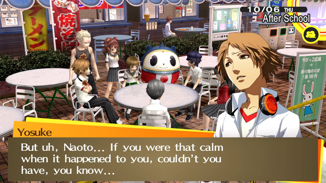
"But uh, Naoto... If you were that calm when it happened to you, could you not have, you know..."
- Yosuke
"I'm not saying you shoulda caught him, but isn't it kinda sad for an ace detective to go down that easily...?"
- Yosuke
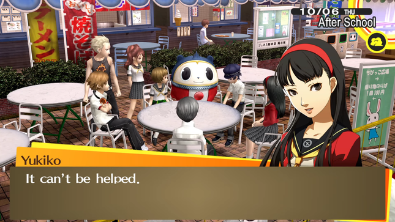
"It can't be helped."
- Yukiko
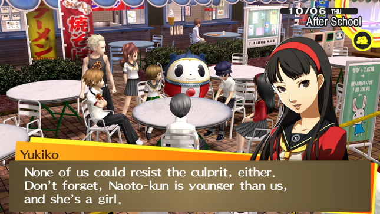
"None of us could resist the culprit, either. Don't forget, Naoto-kun is younger than us, and she's a girl."
- Yukiko
Naoto was a model victim; he remembered numerous details about his kidnapping and reported them in a formal manner. Despite this Yosuke goes out of his way to make fun of Naoto and imply that Naoto has failed as a detective, and Yukiko interjects and states that Naoto would have not been able to do much more because he is a young girl.
This undermines whatever point Naoto's arc had about accepting that he is a young female detective. It's hard to view this moment as a one off joke when P4G has repeatedly reinforced that it thinks women are less than.
It's not that being a woman does not make Naoto less of a detective, because P4G does think being a woman makes you less than a man. So, what is the point? That Naoto should lick his wounds and accept being a woman since that is the "truth"?
To move away from Naoto as a potential feminist message: Naoto was likely not made with the intentions of being a transgender character, but through his character P4G communicates transphobic beliefs.
![An in game screenshot from Persona 4 Golden. Kanji, Rise, Chie, Teddie, Yukiko, Yu, and Yosuke are all standing around Naoto and his shadow. They are standing in a laboratory full of large, dangerous tools like drills and saws. Naoto's shadow is surrounded by a blue aura. He is wearing a lab coat that is too large for his body, the sleeves go over his hands. Naoto's character sprite is to the right of the screen, he is currently speaking and looks dejected. The textbox at the bottom of the screen reads: 'But though I will one day change from a child to an adult, I will never change from a woman to a man...'.](../../assets/article-specific/P4G/naoto_quote_1.png)
"But though I will one day change from a child to an adult, I will never change from a woman to a man..."
- Naoto
The truth of Naoto's story that P4G presents is that he does not actually want to be a man and that he just wants to avoid misogyny in his field. There is a deeper implication that gender itself is the truth and any attempt to change it, to transition, would be a lie, which is a transphobic concept.
Naoto's line about how he could be an adult, but he could never be a man is heartbreaking and bleak. It would have been a strong line from a transgender character as it properly gets across the despondent and hopeless state dysphoria can put a person in, but in P4G? Naoto could be a man if he wanted. That would not be running from the "truth", if anything that would be "reaching the truth" and seeking out a better life.
![An in game screenshot from Persona 4 Golden. Naoto and his shadow are on screen. They are standing in a laboratory full of large, dangerous tools like drills and saws. Naoto's shadow is surrounded by a blue aura. He is wearing a lab coat that is too large for his body, the sleeves go over his hands. Shadow Naoto's character sprite is to the right of the screen, he is currently speaking and looks slightly angry. The textbox at the bottom of the screen reads: 'It's all right. You needn't suffer anymore. That's why you're undergoing this body alteration procedure to begin with.'.](../../assets/article-specific/P4G/shadow_naoto_quote_1.png)
"It's all right. You needn't suffer anymore. That's why you're undergoing this body alteration procedure to begin with."
- Naoto's Shadow
Even if P4G was unaware of transgender issues, which seems a bit unlikely given how much Naoto's shadow references sexual reassignment surgery, viewing gender as a truth undercuts Naoto's decision to start presenting as his biological gender. Naoto is no longer given agency in choosing how to live his life, he is just going along with the "truth" constructed for him at birth.
There are ways to write a female character who wants to be a man to avoid misogyny. It is hard to do without transphobic implications, because it is a common belief that trans men are just trying to avoid the hard parts of being a woman, but it can be done.
It was a smart choice to focus on how detective media influenced Naoto and lead him to believe that he would be unable to live up to his dreams if he was not a man. Besides that point, though, Naoto expresses extreme discomfort in being a woman. This is something that is heavily brought to light in P4G since P4G loves making Naoto uncomfortable and dysphoric.
If Naoto is in the scene, and if it is Naoto's turn to be humiliated, it will be pointed out that he secretly has a larger chest. After years of "pretending to be a man" Naoto is going to be uncomfortable with "womanly" aspects of his body. In these scenes, Naoto is being sexually harassed and discomfort is a normal response, but P4G repeatedly targets him with this. P4G gets a thrill out of pointing out Naoto's body to himself. His body is a "truth" that he can never change.
For a final note on intentions, it really does not matter if Naoto was meant to fill a transphobic purpose, because his arc, as a theoretical transgender character, fits into P4G perfectly. If they had intentionally made Naoto transgender, his arc would take a similar path.
This theoretical doesn't need to be questioned given the previously mentioned drag contest. Within P4G's narrative it may be truthful that Naoto "doesn't really want to be a man", but the drag contest broadcasts complete disgust at the concept of someone genuinely wanting to be the opposite gender.
The truth only matters in P4G if it fits the writers' worldview, otherwise it must be beaten down and rejected. Trans women make the writers uncomfortable, so they portray their existence as a falsehood. A narrative about truth is worth nothing if it cannot accept truths that harm its status quo.
To talk about Naoto as both a feminist and unintended transgender character, there are issues on all fronts. After his arc he would have not had to change his presentation. Naoto choosing to wear the clothes he likes would not go against his story of accepting being a woman, as there is no set definition of what it means to be a woman. P4G does have strict expectations for women, and to prove himself, Naoto must try to be "girlish".
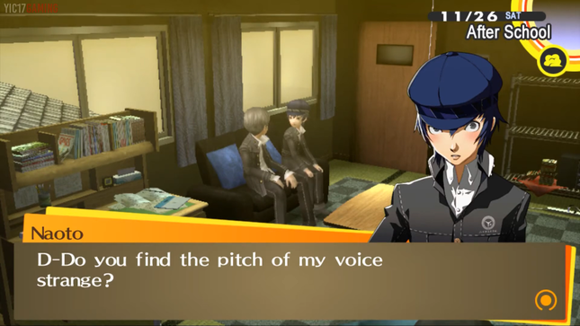
"D-Do you find the pitch of my voice strange?"
- Naoto
If you choose to romance Naoto in his SLINK, he will ask if the pitch of his voice bothers you and if he should change it (in the original Japanese version Naoto asks the player if he should change the first person pronoun he uses). If you say Naoto should do what he prefers, he is thankful and keeps his voice as is. If you say you want him to talk in a higher pitch, he compiles but is nervous about it. He says something about how he can grow to like himself, but this is clearly an act for the player as part of their romance.
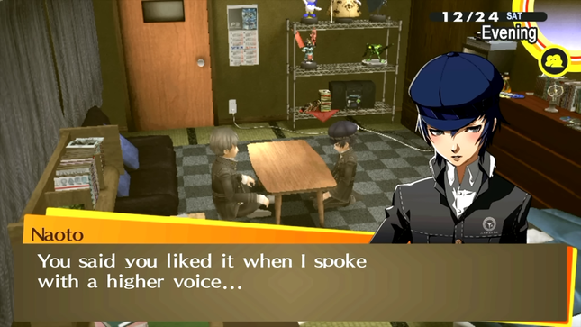
"You said you liked it when I spoke with a higher voice..."
- Naoto
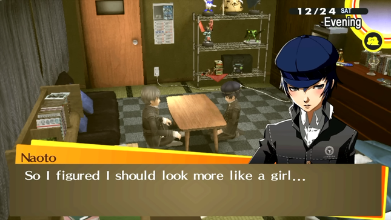
"So, I figured I should look more like a girl..."
- Naoto
If Naoto visits the player on Christmas, he will bring along a girl's school uniform. He wears it but is extremely uncomfortable. Nearly every time that Naoto "tries being a girl" on screen it is for the "enjoyment" of the player in a romantic context, which is disgusting.
Just as Kanji is only allowed to be gay when it is time for another stale homophobic joke, Naoto is dubiously not cisgender when its time for the player to have their converting power fantasy.
As a feminist message, Naoto's arc fails as P4G views men and women in separate spheres. To P4G, gender is a truth that cannot be changed. To be a female you must fulfill specific roles and act in specific ways.
ADACHI
During the investigation to find the true killer, you talk to nearly every single person in the town, and no one has anything important to say. With the few hints you have, and the list of characters you are given, it feels more like "well it has to be Adachi" rather than an actual exciting moment.
P4G wants to ride an unfortunate line of being a mystery game, but not wanting to give exciting clues. This trepidation bars P4G from hitting the highs it could have as a mystery game. The only exciting bit of evidence is Adachi's reaction to Namatame's journal.
In the grand scope of the game this is a minor issue, but it is frustrating to see P4G labeled as a detective game when it is a surface level view into the genre. The investigation segments do not provide concrete or engaging information, they largely exist as fluff.
For Adachi himself, having a villain fully motivated by boredom and abuse of power can work in this situation, especially given the context that Adachi is a police officer. Adachi could have been an interesting character.
The party in P4G is extremely haphazard: most characters joined because they got kidnapped once, or because they fell in the TV in Junes. Naoto is actively involved in the mystery, Yosuke is emotionally involved due to Saki, and Yukiko is involved as Amagi Inn is tied to the murder. Naoto is the only character with strong grounding; Yukiko is barely entangled, and Yosuke's motivation being his fridged love interest is a weak point given P4G's overall treatment of women.
Everyone else in the party is just along for the ride. This is unfortunate as these characters could have been used to better reinforce P4G's themes on rumors and truth or to further elaborate on Adachi. Of course they do something for these themes during their introductions, but after the fact, less is done.
Yu and Yosuke are the party's only direct ties to Adachi. Yosuke's shadow draws a noticeably clear parallel to Adachi, both are bored misogynists seeking out thrills. P4G never directly draws to this connection or uses it as a meaningful way to improve Yosuke's character, so it must be assumed that this was either unintended or not handled to its full potential.
That leaves Yu as the only major Adachi connection. It is good to connect the player to the villain, but Yu is largely a plot device instead of a character. Adachi needs more footing besides Yu.
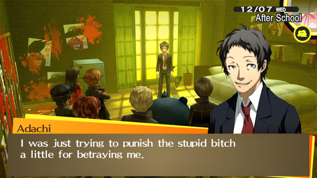
"I was just trying to punish the stupid bitch a little for betraying me."
- Adachi
Adachi is a good concept, but he serves little in P4G. Adachi is a violent misogynist; he is an incel even if that word was not on ATLUS's mind. His character is barely a statement on misogynist men. P4G never makes any interesting comments on Adachi's misogynist actions, he just calls women "bitches", and you are left to fill in the blanks. That is troublesome for P4G, because P4G thinks women are bitches.
Women in P4G are repeatedly sexually assaulted, and if P4G needs a mean minor character, it will consistently be a woman. P4G does not like women in the slightest. So, to have a violent misogynist villain, whose misogyny is only brought up during his acts of violence, does not sit well.
Furthermore, Adachi's message that the people of Inaba want to ignore the truth is equally frustrating since P4G is not a game about truth, it is a game about doing what makes you fit in and what people expect of you.
Adachi only brings to light P4G's inconsistent and harmful ideas on "truth" and repeat misogyny.
MARIE AND IZANAMI-NO-OKAMI AND INABA
Marie is an inoffensive character. Due to her arc the player will have to play P4G for an extra in game month, which can be upsetting, but as a whole Marie adds nothing of substance to P4G for better or for worse.
The dungeon in this section of the game does employs some interesting mechanics, which P4G is in a drought for. It is not much, but at least it is something.
P4G plays like Persona 3, which uses a rather uninteresting turn based combat system. At this point ATLUS was crafting elaborate and exciting systems for Shin Megami Tensei, but this was not extended to Persona just yet. It could be argued that P4G plays better than Persona 3 as it is easier and therefore less frustrating, but this is a point that will depend on personal preference.
During the end of P4G's runtime, the pace becomes especially stagnant. January and half of February feature no mainline plot developments and the player is left to finish up their SLINKs. In the middle of February, Marie's dungeon takes place, and then the player will jump to the last days of the game. On one of the final days all of the Izanami developments take place. At the end of P4G days are either empty, or contain entire arcs.
For a mystery game, Izanami is an exciting prospect: a moment where the heroes realized they were missing a key piece and there was a connection between it all. In P4G, it is much less exciting, because everyone started questioning if there was more to the case out of the blue.
Izanami is P4G's attempt to further establish a message about the world's blindness to truth, but this falls into similar pitfalls as Adachi.
Besides the obvious conflicting ideas, the theme of truth is handled with low grace, but better than most plot points. The fog in P4G is the most apparent symbol a Persona game has ever had, and it does not do anything groundbreaking with it besides offering a nice visual.
The fog does offer an example of rumors affecting truth in Inaba through the placebo poison fog. For a game that wants to make statements about truth and Inaba as a whole, it is a bit frustrating to reserve moments of rumors affecting the town in a widespread and tangible way for the end of the game. The fog does exist as a symbol for truth being obscured, but with P4G's already weak examples of rumors in Inaba this circular reasoning serves a minuscule effect.
The Midnight Channel functions as a reflection of rumors around town. Within the main plot these rumors end the minute a dungeon is over. A character's false perceptions of another never leads to turmoil or a dangerous situation within Inaba itself.
Yosuke is placed in a position where he is surrounded by rumors and is directly a villain of Inaba. His family owns the superstore that is taking away from small businesses. This is a good conflict, but after the start of the game this is only discussed in some of Yosuke and Noaki's SLINKs. It would have been great to continue on this point and have people around Inaba not like Yosuke and to have the rumors affect the party's investigations 1, but P4G does not have plot moments like that. Outside of the beginning and end of the game, each segment of the game will have full focus on one character. All discussions will be tied to that character with little room for developments on previous arcs.
Reserving character developments to SLINKs is a consistent issue Persona has had. It is good to save some moments for SLINKs to make them rewarding to complete, but P4G has multiple points of slowdown. There would have been room for side content to be placed in the main plot and it would have furthered P4G's themes on rumors and truth.
Overall, Inaba is an underutilized location and part of that is caused by the low amount of plot important side characters. In Persona 3 and Persona 5, each arc has a handful of characters that support that arc's main purpose. In the Kamoshida arc alone Ryuji, Ann, Mishima, Shiho, Shujin teachers, and Shujin students all communicate the concepts that Kamoshida is a bad person and abuse against women is allowed to continue because institutions will uphold bad men. Persona 3 has a smaller roster, but even it has an involved cast through Strega and the Kirijo group.
When P4G wants to make a statement, it will have the party and maybe Dojima comment on a plot point, and then have faceless NPCs make claims. Sometimes these claims barely correlate with what is going on with a character's dungeon or personal plot. There are numerous SLINK characters and party members that could have been deployed to tell minor plot points about the town and its relation to truth, but this is not done.
Inaba exists as an alluring troubled small town with nothing below its surface. Persona 3 and Persona 5 do a better job employing their NPCs and cities to display that people have become diluted and avoidant to the truth, and they are not the games with the main theme of truth.
P4G does not even need to add more characters, they just need to give the main party more to do and have more plot relevant NPC interaction. The Midnight Channel should lead to plot developments outside of the party's personal stories.
If P4G was a better game, maybe the specifics on how well truth was applied in Inaba would not matter. In combination with the game's frustrating developments of truth through the main party, the lack of substance within the town does not help explain and uphold P4G's themes about society as a whole.
FINAL THOUGHTS
At the end of P4G, when you see the party a year later as their grown selves, it is more apparent than ever how little they have changed.
Yosuke is still terrible, Chie is doing whatever Chie does, Yukiko is running her family's inn, and Rise is an idol. Kanji and Naoto have changed the most: they both take on a more typical and conformed appearance, and it is bleak.
P4G is a bad narrative with lackluster gameplay, and the game is both offensive and incompetent. The worst part of it all is the discussion surrounding P4G.
![An in game screenshot from Persona 4 Golden. The screenshot is from an animated cutscene, it shows a photo of the main characters standing together. The back row has (from left to right): Teddie in his human form, Yosuke, Yu, and Kanji (who is wearing glasses, returned his hair to its natural black color, and unspiked his hair so it falls normally). The front row has (from left to right): Naoto (who is wearing a blouse with the top buttons undone), Marie, Chie, Rise, and Yukiko. All of the characters look different than their normal designs due to the time jump.](../../assets/article-specific/P4G/ending_photo.png)
The characters within P4G are not real. They do not have their own wills and thoughts. They exist as an extension of the writer to communicate concepts. Do not take the characters' words as fact, question the purpose beneath them. If you genuinely love the game as a piece of writing, then acknowledge that it did not come out of thin air.
There has been some discussion on how P4G's translation affects the game's quality. If there is a better form of P4G out there, that does not remedy any issues with the game's writing. You can sit down and play the English version of Persona 4 Golden and it communicates poorly written and hurtful ideas whether it wants to or not. It is doubtful how much a bad translation could have affected P4G given how cruelty has its roots in its core.
There are numerous reasons as to why Persona 4 is the way that it is. None of these reasons make Persona 4 appear as something that did the best it could in an impossible situation. It was an asset flip made in two years and it's evident.
Some people try to pass off P4G's bigotry as just a byproduct of the culture it was made in. Women, fat people, gay people, and transgender people live in Japan. It is racist to imply that bigotry is an inherent part of Japanese culture.
Similarly, the time period P4G was created and should not affect any judgement made to it. People still talk about it today and accept the game's explanations and characters at face value.
At the end of it all, it is hard to imagine what purpose Persona 4 fills. As discussed, the themes of truth are inconsistent and harmful. The mystery and location are half baked. The gameplay is weak and the story segments are not much better.
Persona games exist as a power fantasy where a person is allowed to have both otherworldly abilities and a flourishing social life. People love you in Persona 4, but they tear eachother apart in a way that is draining and terrible to be around. It's just a cruel video game.
Credits
Thank you to my friends Chai and Sloane for proof reading.
(Most) Screenshots and quotes were taken from
"They'd never say those awful, degrading things. Yes, I vastly prefer men..." "This isn't really him! It's just his emotions going haywire!" "It ain't a matter of guys or chicks... I'm just scared shitless of being rejected." "Girls make fun of me, the people in the neighborhood treat me like I'm some zoo animal, so I was sick of everything." "So like, that means you came out to everyone too?" "Wh-wh-What the hell's that supposed to mean!? I-I already told you guys I'm not like that!" "Wh-What...?" "... Only girls count for this, all right?" "What I mean is, uh... Are we gonna be safe alone with you?" "You know, you two still owe us." "Those girls might be childish on the inside, but I bet they're gonna turn into some fine-looking women before too long!" "Dude, it's terrifying... I can just imagine someone like him sitting across from me on a train!" "Her androgynous charm seems to have won most of the girls' hearts." "But uh, Naoto... If you were that calm when it happened to you, could you not have, you know..." "I'm not saying you shoulda caught him, but isn't it kinda sad for an ace detective to go down that easily...?" "It can't be helped." "None of us could resist the culprit, either. Don't forget, Naoto-kun is younger than us, and she's a girl." "But though I will one day change from a child to an adult, I will never change from a woman to a man..." "It's all right. You needn't suffer anymore. That's why you're undergoing this body alteration procedure to begin with." "I was just trying to punish the stupid bitch a little for betraying me."
Notes
1 While getting screenshots for this page I saw a singular dialogue box from Yosuke where he talks about how he wasn't able to get information about Kanji